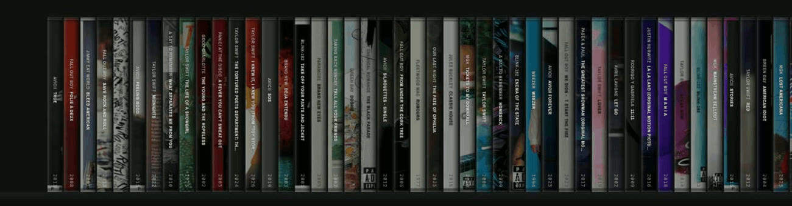
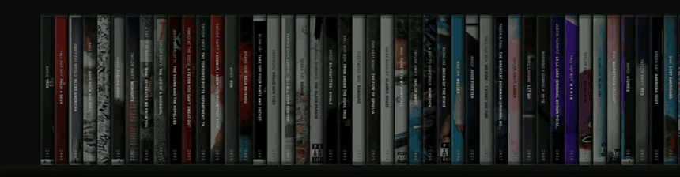
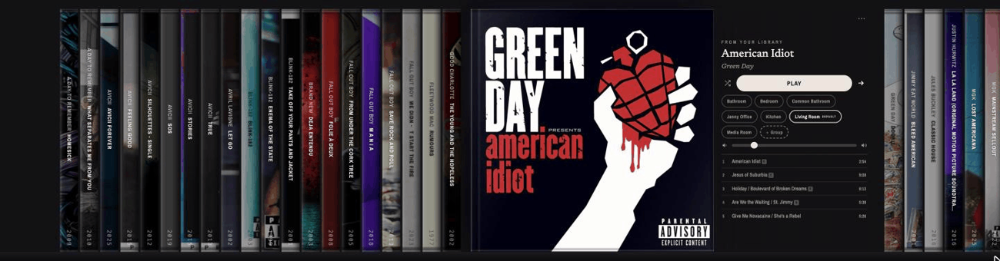
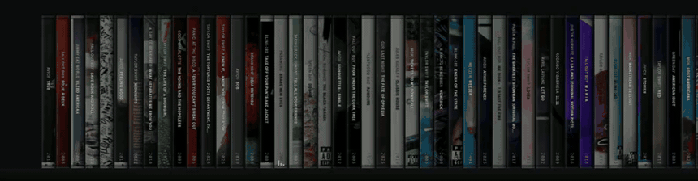
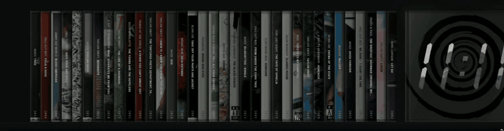
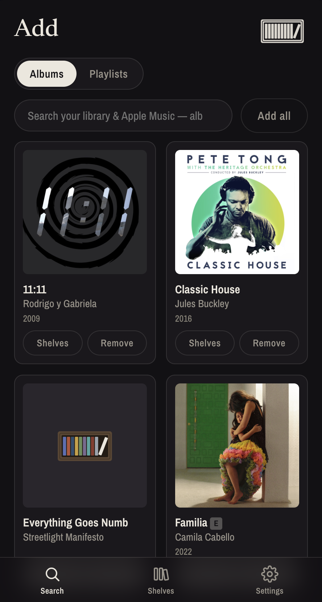
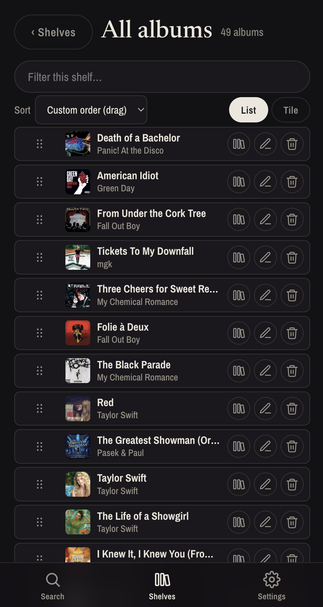
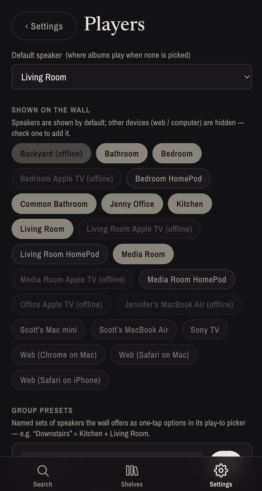

Crate turns your streaming collection into physical CD-jewel-cases on a wall-mounted touchscreen. Tap a case, the album flips open, hit play — and it starts playing on your speakers.

Two screens: the always-on kiosk on the wall, and a phone/desktop admin app for importing, curating and configuring everything behind it.




A responsive web app you run from your phone — import, curate, and configure from the couch.



“A grid of tiny cover thumbnails you scroll past and forget. No shelf, no albums, nothing to browse.”
The physical joy of flipping through a collection disappeared when the music went digital.
A wall you actually walk up to — albums you browse, tap, and play.
Your streaming library becomes a tactile, always-on object in the room. All the catalog of streaming, all the browse-ability of a record crate — on commodity hardware you can build yourself.
One backend process serves both front-ends and holds a single authenticated connection to Music Assistant, which drives whatever speakers you've connected.
A stretched-bar touchscreen, a small host, and a Music Assistant instance. Crate plays whatever your MA supports — Apple Music, Spotify, and more — out to Sonos, AirPlay, and any other player you connect.
Crate is open-source. Clone it, point it at your Music Assistant, and hang it up.
Get it on GitHubCrate is a wall-mounted touchscreen music shelf. This is where the usage guide will live — setup, curation, and day-to-day use.
Crate renders your streaming collection as physical CD jewel-cases on an ultrawide, wall-mounted touchscreen. Tap a case, the album flips open, hit play, and it streams to your speakers through Music Assistant. It's open-source and runs on commodity hardware.
Both are served by a single backend process that holds the connection to Music Assistant. See Architecture for the full picture.
Get the backend and both front-ends running against your Music Assistant instance.
npm install
# 1. Device service (REST + WS + SQLite + artwork) on :8080
MA_URL=http://<ma-host>:8095 MA_TOKEN=<token> npm run dev:server
# 2. Shelf (kiosk UI) on :5173
npm run dev:shelf
# 3. Admin (search + curate) on :5174
npm run dev:adminOpen the admin at http://localhost:5174, search for an album, and add it. It appears on the shelf at http://localhost:5173 — tap it and press play.
What to buy and how to mount it. Crate targets a stretched-bar ultrawide touchscreen.
hardware/ folder in the repo.An ultrawide, stretched-bar touchscreen (roughly 2608×720) is the target form factor for the wall.
A small always-on host runs the backend and serves the built front-ends. It talks to Music Assistant over your local network.
The wall UI: browsing, flipping cases open, and playing.
Cases render duration-scaled across the wall. Pinch to change density or bring up a magnifier loupe.
Tap a case to flip the album open. Tapping a song highlights it; a separate Play button starts playback — nothing auto-plays on tap.
Import, curate, and configure from your phone or desktop.
Search your sources and add albums or playlists to the wall. Build curated, reorderable shelves, each with its own sort.
Manage speakers and group presets, set brightness and the sleep schedule, and watch live service status for the three apps plus Music Assistant.
Choosing where the music plays and how groups work.
Pick any speaker or group as the play target. It's sticky per session and resets to the admin default when the wall goes idle.
Form groups from the album picker (multi-select or long-press) and save one-tap group presets. Per-room and proportional group volume track external Sonos-app changes live.
Environment variables and settings for the device service.
MA_URL http://homeassistant.local:8095 # Music Assistant base URL
MA_TOKEN — # MA long-lived token (required)
CRATE_DATA_DIR ./data # SQLite + cached artwork
CRATE_PORT 8080 # Device service port
CRATE_COVER_HEIGHT 1440 # Cover rendition height (px)One backend process, two browser front-ends it serves, and a single connection to Music Assistant.
ARCHITECTURE.md in the repo for the current, authoritative version./ws fan-out hub, SQLite, and one persistent WebSocket to Music Assistant././admin/.The front-ends are static bundles with no runtime of their own; the server mounts each dist/ at its route. Both share types and the API client via @crate/shared.
Phase 0 proved node-sonos-http-api can't reliably start arbitrary albums on a real Sonos household. Music Assistant streams to Sonos with the operator's real credentials and exposes search, metadata, artwork, playback, and live state over one authenticated WebSocket.